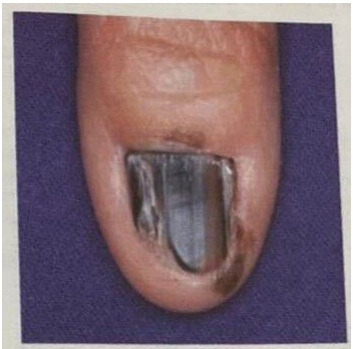
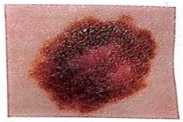
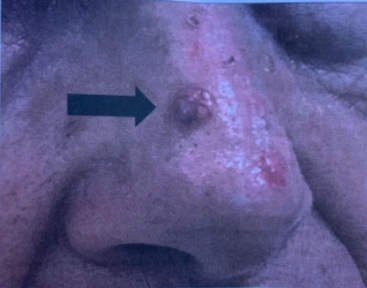
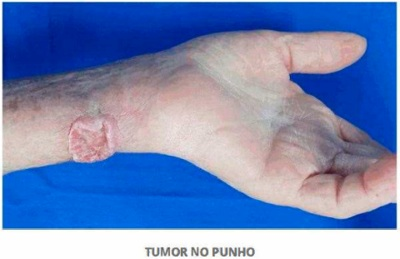
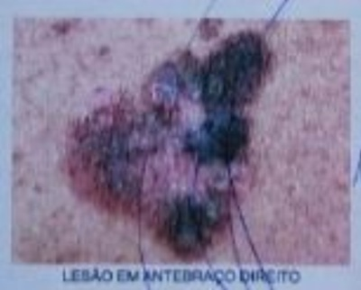
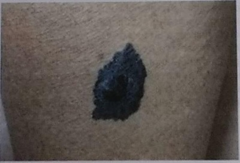
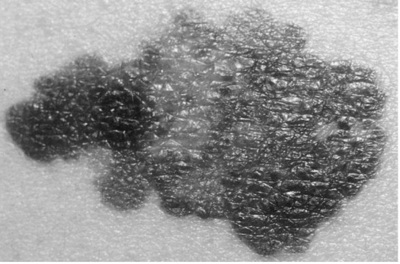

Questão 1 · Clínica e tipos histológicos · Dermatologia · Tratamento e conduta · 4000182185Mulher de 50 anos procura cirurgião plástico preocupada com lesão papular hipercrômica na face, com cerca de 2 mm de espessura, simétrica, bordos regulares, coloração homogênea, diâmetro de 5 mm e crescimento lento. Qual a melhor conduta?
A Exérese com margem de 5 mm e pesquisa do linfonodo sentinela cervical.
B Eletrocauterização.
C Crioterapia.
D Exérese com margem de 2 mm e exame anatomopatológico.
Questão 2 · Clínica e tipos histológicos · Dermatologia · 4000182154Mulher, 62 anos, parda, diabética e hipertensa controlada, portadora de lúpus sistêmico em uso de cloroquina e azatioprina há 8 anos. Refere trauma na unha do 1º quirodáctilo da mão esquerda há 1 ano. Desde então notou escurecimento da unha (Figura). Qual diagnóstico mais provável?

A Melanoníquia traumática.
B Melanoma ungueal.
C Nevo melanocítico.
D Melanoníquia medicamentosa.
Questão 3 · Dermatologia · Tratamento e conduta · 4000181706Uma mulher de 54 anos de idade é encaminhada pela dermatologista, após biópsia excisional de lesão cutânea enegrecida de cerca de 2,2 cm de extensão em face anterior do braço direito. A análise histológica revelou melanoma nodular de 2,8 mm de profundidade, com ulceração. Após o estadiamento adequado, a melhor conduta, entre as seguintes, é:
A Ampliação de margens em 2 cm, com pesquisa de linfonodo sentinela.
B Ampliação de margens em 0,5 cm, com pesquisa de linfonodo sentinela.
C Seguimento clínico, com nova avaliação em 4 meses.
D Ampliação de margens em 2 cm.
Questão 4 · Dermatologia · Tratamento e conduta · 4000181587Um paciente de 27 anos possui uma lesão pigmentada e assimétrica, de aproximadamente 7mm, localizada em pele do dorso. Procurou um médico que indicou biópsia. Qual é o melhor tipo de biópsia a ser indicada para esse paciente?
A Biópsia incisional.
B Biópsia excisional.
C Biópsia em shaving superficial.
D Biópsia com agulha fina.
E Biópsia com agulha grossa.
Questão 5 · Diagnóstico estadiamento e f atores prognósticos · Dermatologia · 4000169536Diante de uma lesão suspeita de melanoma cutâneo, a conduta inicial CORRETA é:
A Realizar biópsia excisional com margens amplas.
B Realizar biópsia incisional.
C Realizar biópsia excisional com margens exíguas.
D Realizar biópsia pela técnica de saucerização (shaving).
Questão 6 · Diagnóstico estadiamento e f atores prognósticos · Dermatologia · Tratamento e conduta · 4000168788KS, sexo masculino, 45 anos, retorna ao serviço de cirurgia ambulatorial com o resultado do exame histopatológico de cirurgia realizada anteriormente. Segundo a descrição cirúrgica foi ressecado nevo pigmentado, irregular, assimétrico e multicolorido em face, com margem de 1cm. O exame anatomopatológico confirma melanoma com células neoplásicas, con nadas à epiderme e ao epitélio anexial com margens cirúrgicas livres. De acordo com as características da lesão e o exame histopatológico, assinale a alternativa que apresenta uma conduta ERRADA:
A Deve-se ampliar as margens de segurança.
B Independentemente do tratamento realizado, o paciente deve ser acompanhado regularmente.
C Não há indicação para pesquisa de linfonodo sentinela.
D Não há necessidade de nova intervenção cirúrgica, pelas características histopatológicas.
Questão 7 · Diagnóstico estadiamento e f atores prognósticos · Dermatologia · 4000168316Paciente masculino, de 56 anos, consultou por lesão de pele no dorso (imagem abaixo) que já vinha sendo observada há muitos anos, mas que, nos últimos meses, apresentou crescimento e mudança de cor. Negou prurido ou sangramento. Não tinha histórico pessoal ou familiar de melanoma. O maior diâmetro da lesão é de 8 mm. Diante desse quadro clínico, qual a conduta mais adequada?

A Biópsia excisional da lesão com margem mínima de pele aparentemente normal ( 1-2 mm ).
B Biópsia incisional com navete cirúrgica, incluindo borda aparentemente mais ativa.
C Biópsias incisionais com punch em pelo menos 3 áreas mais suspeitas (borda e transição de cor).
D Exérese da lesão com margem mínima de pele aparentemente normal (1-2 cm).
Questão 8 · Diagnóstico estadiamento e f atores prognósticos · 4000166865O fator mais importante na avaliação histopatológica do melanoma é:
A número de mitoses.
B presença de regressão.
C índice de Breslow.
D localização da lesão.
Questão 10 · Tratamento · Apresentação clínica · 4000164252Mulher de 62 anos, trabalhadora rural, procurou unidade básica de saúde queixando-se de lesão cutânea em nariz ( figura), com crescimento progressivo nos últimos 6 meses. Baseado na principal hipótese diagnóstica, qual o tratamento mais indicado?

A Terapia fotodinâmica.
B Curetagem e eletrocoagulação.
C Radioterapia superficial.
D Exérese com margens de segurança.
Questão 11 · Tratamento e conduta · 4000164248Mulher de 56 anos notou surgimento de lesão escurecida e irregular em antebraço direito. A biópsia da lesão identi cou melanoma nodular, com Breslow de 0,5 milímetro, sem regressão, sem invasão angiolinfática, sem mitoses e com ulceração. Ao exame físico: cicatriz da biópsia em antebraço direito em bom aspecto e sem sinais de recidiva local, cadeia linfática axilar direita sem massas ou adenomegalias. Os exames radiológicos não mostraram sinais de metástase em outros órgãos. Que condutas devem ser implementadas?
A Ampliação de margens de 2 cm e linfadenectomia axilar ipsilateral.
B Ampliação de margens de 2 cm e biópsia de linfonodo sentinela.
C Ampliação de margens de 1 cm e biópsia de linfonodo sentinela.
D Ampliação de margens de 1cm e linfadenectomia axilar ipsilateral.
Questão 12 · Tratamento e conduta · 4000163671Mulher, 52 anos, procura a Unidade Básica de Saúde, por apresentar lesão pigmentada assintomática em membro inferior, percebida há 8 meses (figura). A lesão possui 0.9 cm de diâmetro e está localizada na região lateral da coxa direita. Conferir figura correspondente com melhor resolução no anexo (FIGURA 3) Em relação ao próximo passo na abordagem da lesão em questão, marque a alternativa correta.

A Encaminhar para cirurgião para realizar excisão com margens de 1 cm.
B Acompanhar clinicamente a lesão com foto e visitas periódicas semestrais.
C Encaminhar para dermatologista para realizar dermatoscopia e biópsia excisional.
D Realizar biópsia incisional na própria unidade básica para elucidação diagnóstica.
Questão 13 · Clínica Médica · Diagnóstico estadiamento e f atores prognósticos · 4000151921Uma paciente de 30 anos procura atendimento dermatológico com queixa de uma “pinta” nas costas que está crescendo. Ao exame dermatológico há uma placa enegrecida com áreas mais escuras e outras mais claras, assimétrica e com bordas irregulares medindo 5mm. Diante desse caso clínico, assinale a alternativa correta.
A A conduta correta nesse momento é realizar biópsia excisional com margem de 2mm.
B Como a lesão mede menos do que 6 mm, a melhor conduta é acompanhá-la para avaliar se haverá indicação de exérese.
C A biópsia incisional é a melhor forma de amostragem dessa lesão.
D Devemos realizar uma exérese com margens amplas de aproximadamente 2cm.
E Além da exérese devemos realizar pesquisa de linfonodo sentinela.
Questão 14 · Tratamento e conduta · 4000145483Homem de 35 anos percebeu lesão pigmentada atípica, na coxa esquerda, com crescimento progressivo, atualmente com 1,2cm de diâmetro. Veio à consulta porque apresentou sangramento local discreto, que atribuiu a provável trauma recente. A dermatoscopia é sugestiva de melanoma. Qual é a conduta MAIS ADEQUADA:
A Acompanhar a evolução da lesão para certificar se o sangramento foi por trauma ou ulceração espontânea
B Realizar biopsia da lesão, preferencialmente excisional com margens mínimas
C Realizar ressecção da lesão com margens amplas e com pesquisa e biopsia de linfonodo sentinela
D Ressecção alargada com margem oncológica e linfadenectomia ilioinguinal radical
Questão 15 · Tratamento e conduta · 4000144775Homem, 45 anos de idade, hígido, apresenta lesão cutânea de 1,5 cm de diâmetro, no tórax. Diante da suspeita de melanoma, qual é a conduta mais adequada?
A Biópsia excisional com margens de 1 a 2 mm,incluindo tecido adiposo subjacente.
B Biópsia incisional sem chegar no tecido adiposo para não ocorrer disseminação do tumor.
C Biópsia excisional com margem de 1 cm, incluindo a fascia muscular subjacente.
D Biópsia aspirativa por agulha fina para obtenção de material citológico.
Questão 16 · Carcinoma espinocelular invasivo · 4000144224Mulher de 81 anos portadora de um tumor cutâneo doloroso e de crescimento progressivo na região do punho há 1 ano, conforme visto na figura. Qual o diagnóstico mais provável?

A Carcinoma basocelular.
B Verruga vulgar.
C Melanoma.
D Carcinoma espinocelular.
Questão 17 · Clínica e tipos histológicos · 4000141661Mulher de 45 anos, oriental, cozinheira, apresenta mácula hipercrômica assintomática no primeiro quirodáctilo direito, com crescimento progressivo há 2 anos, conforme imagem: O diagnóstico provável é

A hematoma com hemossiderose por traumatismo crônico profissional.
B onicomicose por fungos demáceos.
C pigmentação exógena por shitake.
D melanoma lentiginoso acral.
Questão 18 · Apresentação clínica · 4000141653Homem de 69 anos, pescador, apresenta nódulo eritomato- -perláceo com telangectasias na região zigomática com crescimento progressivo há 3 anos, conforme imagem: O diagnóstico provável é

A leishmaniose tegumentar americana.
B carcinoma basocelular nodular.
C linfoma cutâneo.
D esporotricose.
Questão 19 · Diagnóstico · Dermatologia · Apresentação clínica · 4000129636Leia o caso clínico a seguir. Homem branco, de 63 anos, relata surgimento de lesão no sulco nasogeniano há dois anos, indolor e sangrante aos mínimos traumas. O médico assistente descreveu a lesão como sendo uma pápula de aspecto perolado com telangiectasias na superfície, sendo que o exame anatomopatológico identi cou células tumorais basaloides com núcleos periféricos em paliçada. Nesse caso, o diagnóstico do paciente é:
A ceratoacantoma.
B carcinoma basocelular variante papulonodular.
C melanoma amelanótico.
D carcinoma espinocelular.
Questão 20 · Tratamento e conduta · 4000127311Um paciente de 53 anos foi referido a um serviço de cirurgia ambulatorial com uma lesão pigmentada, escurecida, protuberante e não ulcerada em face anterior da coxa direita. O cirurgião avaliou e achou ser segura a síntese da ferida sem a necessidade de retalho e procedeu a ressecção com margem de 1 cm. Na consulta pós-operatória, a ferida estava totalmente cicatrizada, sem evidências de lesões residuais e o resultado do histopatológico evidenciou um melanoma nodular nível II de Clark e Breslow de 0,7mm. Diante deste resultado, a melhor conduta é:
A Indicar nova cirurgia com ampliação de margem oncológica para 3 cm.
B Considerar que a cirurgia foi adequada e orientar o seguimento ambulatorial.
C Indicar a realização de linfadenectomia regional, interferon
D Indicar e encaminhar o paciente para realização de pesquisa de linfonodo sentinela.
Questão 21 · Clínica e tipos histológicos · Risco de metástase · Doença de Bowen · 4000125757Sobre tumores cutâneos, assinale a opção incorreta.
A Radiação ultravioleta, inflamação crônica e queimadura correlacionam-se com a etiologia do carcinoma espinocelular (CEC).
B Doença de Bowen é um CEC e, clinicamente, não se faz necessário estabelecer o diagnóstico diferencial com o carcinoma basocelular (CBC) superficial.
C CEC ocorre em indivíduos transplantados, e metástases a distância são mais frequentesnesse tumor quando comparado com o epitelioma basocelular.
D Lentigo maligno melanoma tem predileção pelas localizações facial e cervical.
E Dentre os CBCs, o nódulo-ulcerativo é o mais frequente na rotina clínica, e o CBC esclerodermiforme pode apresentar prognóstico reservado.
Questão 22 · Tratamento · 4000123464Agricultor de 57 anos veio ao Ambulatório encaminhado pela dermatologista devido à lesão ulcerada no dorso nasal, com 0,5 cm em seu maior diâmetro, e biópsia incisional prévia indicando carcinoma basocelular superficial. Qual a conduta mais adequada?
A Ressecção com margem cirúrgica mínima de 4 mm, por tratar-se de uma região com alto risco de recidiva.
B Ressecção com margem cirúrgica máxima de 3 mm, por tratar-se de uma lesão com baixo risco de recidiva, determinado pelo tipo histológico e pela dimensão (menos de 1 cm).
C Crioterapia, pela dificuldade de localização e boa resposta do carcinoma basocelular ao tratamento não cirúrgico.
D Tratamento radioterápico devido à localização da lesão, que comprometeria a estética com tratamento cirúrgico.
E Terapia sistêmica, por tratar-se de uma lesão de alto risco de recidiva.
Questão 23 · Tratamento e conduta · 4000118792Sabidamente o melanoma representa apenas 3% das neoplasias malignas dermatológicas, contudo, é o tipo mais grave, devido à sua alta possibilidade de provocar metástase, se tornando cada vez mais um desa o para o diagnóstico precoce e prevenção. Paciente feminino, 47 anos, procura assistência após realizar biopsia excisional de lesão melanocítica localizada em membro superior esquerdo. O anátomo patológico mostrava: melanoma Lentigosuper cial, Breslow 1,7, Clark IV, 1 figura de mitose por campo, ausência de guras de mitose, sem ulceração ou in ltração de vasos e nervos e ausência de Satelitose. As margens eram exíguas. Não havia linfoadenopatia palpável ao exame clínico. São condutas corretas para o paciente acima, exceto:
A Linfadenectomia axilar.
B Ampliação das margens.
C Realização de adjuvância com interferon alfa em altas doses.
D Pesquisa de linfonodo sentinela.
Questão 24 · Clínica e tipos histológicos · 4000114291No ABCDE do melanoma, D representa um diâmetro maior que
A 2 mm
B 4 mm
C 6 mm
D 8 mm
Questão 25 · Tratamento e conduta · 4000107253Qual deve ser a margem de ressecção de um melanoma cutâneo in situ?
A 0,5 cm.
B A mais ampla possível.
C Pelo menos 3 cm.
D Depende da distribuição linfática.
Questão 26 · Risco de metástase · Diagnóstico e tratamento · 4000103265Qual das características do carcinoma espinocelular (CEC) listadas abaixo apresenta um pior prognóstico?
A CEC bem diferenciado.
B CEC se desenvolvendo de uma queratose actínica.
C Acometimento exclusivo de todas as camadas da epiderme.
D Invasão perineural.
Questão 27 · Tratamento e conduta · 4000101755Mulher, 37 anos, refere lesão cutânea pigmentada na perna direita de cerca de 2 cm que aumentou de tamanho, acompanhada de prurido e sangramento nos últimos meses. Refere surgimento de massa na região inguinal de 3,5 cm. Realizada biópsia excisional da lesão cutânea que confirmou melanoma lentiginoso com Breslow de 1,9 mm, ulceração e 5 mitoses por campo. Qual deve ser a conduta com relação a massa na região inguinal?
A Biópsia excisional.
B Radioterapia.
C Linfadenectomia inguinal seletiva.
D Pesquisa linfonodo sentinela.
E Punção para análise citológica.
Questão 28 · Clínica e tipos histológicos · Diagnóstico estadiamento e f atores prognósticos · 4000101236Durante o exame clínico de uma senhora de 50 anos o médico identi ca lesão cutânea hipercrômica na face anterior do braço, suspeita para Melanoma pela avaliação das características clínicas (ABCDE). A lesão mede aproximadamente 12mm no maior diâmetro. Qual a melhor conduta nesse momento?
A Biópsia excisional com margens exíguas e incisão longitudinal em relação ao membro.
B Biópsia incisional, priorizando o local da lesão com menor elevação.
C Exérese com margens amplas de 01cm.
D Seguimento clínico rigoroso com reavaliação em 03 meses.
Revisar: possível letra faltando em enunciado
Questão 29 · Tratamento e conduta · 4000086211Mulher, 54 anos, assintomática, recentemente foi submetida à ressecção de um nevo em face anterior da coxa direita. O anatomopatológico demonstrou melanoma de 0,44 milímetros de espessura, Clark nível III, ausência de ulceração e contagem mitótica de zero. No exame físico, não havia linfoadenopatias palpáveis, nódulos satélites ou metástases em trânsito. Hemograma, plaquetas, desidrogenase láctica, transaminases, fosfatase alcalina, gama-glutamil transferase e bilirrubinas estavam dentro dos limites de normalidade. Em relação ao caso, qual é a conduta mais adequada neste momento?
A Solicitar PET-CT e ressonância magnética de crânio.
B Solicitar radiografia de tórax e ultrassonografia de abdome.
C Adotar conduta expectante, sem necessidade de realizar exames de imagem.
D Solicitar tomografia computadorizada de tórax, abdome total e ressonância magnética de crânio.
Questão 30 · Fotoproteção · Introdução · Fotocarcinogênese · 4000078769NÃO é estratégia para a prevenção do câncer de pele:
A Evitar a exposição solar entre 10 e 16 horas.
B Redobrar os cuidados de fotoproteção nas grandes altitudes.
C Preferir o bronzeamento artificial ao natural.
D Reaplicar filtro de proteção solar a cada 2 horas ou após cada mergulho.
Questão 31 · Tratamento e conduta · 4000072871Paciente feminina, branca, 39 anos, apresentando lesão melanocítica com cerca de 2,0 cm em antebraço esquerdo, que foi retirado com margens cirúrgicas de 0,2cm e cujo laudo histopatológico foi de melanoma nível IV de Clark com Breslow 0,7 mm, sem regressão e/ou ulceração, índice mitótico nulo. O exame clínico não evidencia qualquer alteração e o exames de estadiamento não mostram doença metastática. Qual deve ser a conduta diante deste caso?
A Ampliação de margem (ressecção ampliada).
B Observação clínica.
C Ressecção ampliada + linfadenectomia axilar.
D Ressecção ampliada + Pesquisa de linfonodo sentinela.
E Amputação de antebraço.
Questão 32 · Tratamento e conduta · 4000072770Uma mulher de 49 anos de idade com diagnóstico de melanoma em estágio IIB evolui com dispneia e múltiplas metastatases pulmonares. Antes de iniciar a quimioterapia, qual das mutações genéticas abaixo indicará tratamento específico?
A BRAF
B C-KIT
C ERKs”
D N-RAS
E MEK
Questão 33 · Fatores de risco para câncer de pele não melanoma CPNM · 4000067516Todas as opções abaixo aumentam o risco de desenvolvimento de carcinoma escamocelular cutâneo, exceto:
A Exposição aos raios ultravioleta
B Imunossupressão crônica
C PUVA (PSORALEN + UVA)
D Queimadura
E Fenitoína
Questão 34 · Diagnóstico estadiamento e f atores prognósticos · 4000067369O câncer da pele responde por 33% de todos os diagnósticos desta doença no Brasil, sendo que o Instituto Nacional do Câncer (INCA) registra, a cada ano, cerca de 180 mil novos casos. Qual principal indicador prognóstico do melanoma?
A Localização
B Índice de profundidade de Breslow
C Tamanho
D Idade e sexo do paciente
E Envolvimento linfonodal
Questão 35 · Diagnóstico · Apresentação clínica · 4000054580Paciente masculino de 65 anos, trabalhador da construção civil, apresentando há 1 ano pápula eritematosa, de 1 cm de diâmetro, com brilho perolado e telangectasias em dorso nasal. Referia sangramento fácil ao secar o rosto com a toalha. Notou-se também inúmeras lesões máculas de melanose solar em membros superiores e face. Foi submetido a biópsia incisional da lesão nasal, evidenciando massa de células basalóides que se dispõem na periferia em paliçada. Assinale a alternativa que corresponde ao principal diagnóstico da lesão nasal:
A Carcinoma Espinocelular.
B Melanoma.
C Carcinoma Basocelular.
D Nevos Melanocíticos.
E Ceratose actínica.
Questão 36 · Clínica e tipos histológicos · Diagnóstico estadiamento e f atores prognósticos · 4000045833Uma paciente de 53 anos queixa-se da presença de uma pinta no antebraço direito, que cresceu nos últimos 6 meses e passou a apresentar sangramento devido ao atrito com a roupa. Sem outras queixas. Ao exame físico, é digna de nota a presença de mácula pigmentada na face posterior do antebraço direito, de aproximadamente 8 mm no maior diâmetro, mais enegrecida no centro e acastanhada na periferia, assimétrica e de borda irregular. Considerando que o exame físico foi completa e adequadamente realizado e que a única alteração é a descrita sobre a lesão pigmentada, assinale a conduta que se deve seguir.
A Realizar biópsia excisional com margem de pele normal em torno de 2 a 3 mm com biópsia de linfonodo sentinela.
B Realizar biópsia excisional com margem de pele normal em torno de 0,5 a 1,0 cm, sem qualquer conduta adicional.
C Realizar biópsia excisional com margem de pele normal em torno de 2 a 3 mm, sem qualquer conduta adicional.
D Realizar biópsia excisional com margem de pele normal em torno de 0,5 a 1,0 cm com biópsia de linfonodo sentinela.
Questão 37 · Câncer de pele · 4000031692O câncer de pele é o tipo mais comum de câncer, respondendo por pelo menos metade de todas as neoplasias malignas. Com relação às neoplasias cutâneas, marque a alternativa INCORRETA:
A No melanoma cutâneo, o acometimento de linfonodos regionais é o mais importante fator prognóstico isolado preditor de sobrevida; outros fatores prognósticos são em ordem de importância: espessura de Breslow, presença de ulceração e localização anatômica do tumor primário.
B A excisão cirúrgica é o tratamento para a maioria dos carcinomas escamocelulares, estando indicada a ressecção com margem radial de segurança de pelo menos 1 cm.
C Os angiossarcomas cutâneos estão associados ao linfedema crônico, e tipicamente são máculas ou pápulas planas, indolores, pruriginosas, de coloração avermelhada, azulada ou purpúrea; seu tratamento consiste na ressecção com margens negativas associada a radioterapia.
D A maioria dos carcinomas escamocelulares tem como lesão precursora a ceratose actínica, cujo tratamento pode incluir a crioterapia, aplicação de 5- fluorouracil tópico, dermoabrasão ou descamação química.
Questão 38 · Clínica e tipos histológicos · Fatores de risco · 4000030220Paciente do sexo masculino, de 68 anos, trabalhador rural, refere que há um ano apresenta lesão hiperpigmentada de aproximadamente 0,7 cm de diâmetro, localizada na região de dorso superior, com crescimento rápido nos últimos meses. Relata discreto prurido local. Nesse caso, em relação ao possível diagnóstico de melanoma:
A o risco de ser melanoma é baixo, pois quase a totalidade dos melanomas se origina denevos preexistentes.
B a conduta inicial deve ser a realização de biópsia excisional.
C a pesquisa de linfonodo sentinela deve ser feita antes de qualquer propedêutica.
D o prognóstico é melhor se for melanoma nodular, já que não apresenta crescimentovertical.
Questão 39 · Tratamento e conduta · 4000028868Considerando uma neoplasia de pele localizada no braço direito, medindo 2,0 cm e suspeita de melanoma, é incorreto afirmar:
A O mais adequado é realizar a biópsia da lesão para determinação do microestadiamento e posterior programação do tratamento definitivo.
B Durante a realização da biópsia, é importante que se mantenha a integridade da drenagem linfática.
C Para a ressecção definitiva, a melhor orientação da cicatriz operatória é aquela que segue as linhas de força da pele do braço direito.
D Considerando a suspeita de melanoma, o ideal é que o paciente seja encaminhado para equipe especializada no tratamento desta afecção desde os procedimentos iniciais.
Questão 40 · Diagnóstico estadiamento e f atores prognósticos · 4000026580Paciente trabalhador rural, com exposição diária ao sol (cerca de 8h/dia), apresentando lesão na região dorsal, simétrica, com bordas regulares, diâmetro de 5mm, com apenas uma cor. Refere que a lesão está em crescimento. A principal característica desta lesão, para diagnóstico de neoplasia de pele é:
A Lesão simétrica.
B Bordas regulares.
C Diâmetro de 5mm.
D Lesão apresentando apenas uma cor.
E Lesão em crescimento.
Questão 41 · Clínica e tipos histológicos · 4000022189Em relação ao melanoma cutâneo assinale dentre as alternativas abaixo o subtipo histológico mais frequente:
A melanoma nodular.
B lentigo maligno.
C melanoma extensivo superficial.
D melanoma amelanótico.
E melanoma acral.
Questão 42 · Melanoma · 4000020415Sobre o melanoma cutâneo, assinale a alternativa incorreta:
A A regra do ABCDE do melanoma considera os seguintes fatores para diagnóstico das lesões suspeitas: assimetria, bordas, coloração, diâmetro acima de 6mm e extensão em superfície ou modificação do aspecto da lesão.
B A síndrome do nevo displásico representa um fator de risco para melanoma.
C O melanoma lentiginoso-acral é a forma de melanoma mais comum em indivíduos de pele clara.
D O índice de Breslow é um importante marcador de sobrevida no melanoma cutâneo.
E A predisposição genética está entre os principais fatores etiológicos.
Questão 43 · Melanoma · Dermatologia · 4000004537Mulher, 62 anos, vem à UBS com queixa de mancha escura no braço com crescimento rápido nos últimos meses. Paciente refere que há cerca de 2 anos surgiu uma mancha amarronzada no braço esquerdo, e que nos últimos 6 meses notou crescimento e modi cação da lesão. Ao exame físico: mácula assimétrica de 4mm de diâmetro, apresentando 3 cores (marrom escuro, marrom claro e preto), com bordas regulares. Frente a esta lesão suspeita a melhor conduta é:
A Biópsia excisional da lesão com margem cirúrgicas de 2cm, pois a suspeita clínica é de melanoma, e envio do material para exame anatomopatológico.
B Biópsia incisional da lesão, pois a suspeita clínica é de nevo melanocítico, e envio do material para exame anatomopatológico.
C Biópsia excisonal da lesão com margem cirúrgica de 1 a 2mm, pois a suspeita clínica é de melanoma, e envio do material para exame anatomopatológico.
D Biópsia excisional da lesão com margem cirúrgicas de 1cm, pois a suspeita clínica é de melanoma, e envio do material para exame anatomopatológico.
E Acompanhamento clínico e nova avaliação em 6 meses.
Questão 44 · Melanoma · 4000003403O melanoma cutâneo teve um dos seus primeiros relatos descritos por Hunter em 1787. E, em 1806, foi chamado de câncer negro por Laennec, que descobriu as metástases viscerais da doença. Apesar da longa história de avanços na siopatologia, no diagnóstico e no tratamento do melanoma e da facilidade de prevenção e de diagnóstico precoce (protetores solares e exame físico da pele, por exemplo), ele ainda permanece entre os 10 cânceres mais comuns do mundo. Sobre o melanoma cutâneo, é CORRETO afirmar.
A O melanoma representa cerca de 20% dos cânceres de pele.
B O tipo histológico mais comum é o melanoma nodular.
C O estadiamento do melanoma cutâneo, pelo sistema tumor-linfonodo-metástase (TNM), em sua sétima edição, utiliza o índice mitótico para diferenciar categorias precoces.
D Pacientes, nos estágios clínicos 0 e I da classificação TNM, não necessitam de exames adicionais.
E A operação, para ressecar o melanoma primário, é conhecida como Excisão Local Ampliada (ELA) e as margens recomendadas para melanoma In situ são de 2 cm.
Questão 45 · Câncer de pele · 4000001248Sobre os cânceres de pele mais frequentes, assinale a incorreta:
A Melanoma tem seu prognóstico relacionado ao índice de Breslow.
B Carcinoma basocelular, é o tipo de câncer mais frequente dentre todos os cânceres.
C Carcinoma basocelular é o tipo de câncer de pele menos comum.
D Carcinoma espinocelular é o tipo de câncer derivado da linhagem dos queratinocitos suprabasais.
E Melanoma acomete indivíduos de qualquer fototipo.
Questão 46 · Introdução · Carcinoma basocelular · 4000125553Das neoplasias malignas da pele qual a mais frequente?
A Melanoma.
B Carcinoma Basocelular.
C Carcinoma espinocelular.
D Lipossarcoma.
E Sarcoma de Kaposi.
Questão 47 · Clínica e tipos histológicos · 4000123385Sobre tumores cutâneos, assinale a opção incorreta.
A Melanoma lentiginioso acral não tem predileção por negros e por asiáticos.
B Carcinoma basocelular (CBC) pigmentado, clinicamente, faz diagnóstico diferencial com melanoma nodular e com ceratose seborreica.
C Indivíduos transplantados são suscetiveis a apresentarem carcinoma espinocleular (CEC).
D Lentigo maligno melanoma tem predileção por indivíduos idosos.
E Ceratoses actínicas, HPV (papiloma vírus humano) lúpus eritematoso e xeroderma pigmentoso são condições que favorecem ao CEC.
Questão 48 · Fatores de risco · 4000123343Com relação ao melanoma cutâneo, é correto afirmar que
A pode ocorrer sobre nevos preexistentes ou a partir de pele normal.
B sua incidência está diminuindo devido ao diagnóstico precoce.
C os grupos etários mais acometidos são os de crianças e idosos.
D seu principal indicador prognóstico é o diâmetro da lesão.
E a radioterapia é a melhor forma de tratamento para a lesão primária.
Questão 49 · Diagnóstico estadiamento e f atores prognósticos · 4000120597No estadiamento tumoral do melanoma cutâneo, além da profundidade de Breslow, a característica clínico-patológica da lesão primária que mais impacta no prognóstico do paciente é
A o índice mitótico.
B o tipo clínico-patológico.
C o grau de atipia celular.
D a presença de ulceração.
Questão 50 · Clínica e tipos histológicos · 4000109759Em relação aos tipos de melanoma, quais as associações corretas? I - Extensivo superficial. II - Lentigo maligno. III - Acral lentiginoso. IV - Nodular. A - Pacientes idosos. B - Afrodescendentes e asiáticos. C - Mais comum. D - Mais agressivo (10 a 15% dos casos).
A I/C; II/A; III/B; IV/D.
B I/B; II/A; III/D; IV/C.
C I/C; II/A; III/D; IV/B.
D I/A; II/D; III/C; IV/B.
E I/B; II/D; III/C; IV/A.
Questão 51 · Tratamento e conduta · 4000106379Mulher, 42 anos, apresentou lesão cutânea hiperpigmentada de 1,5 cm em face anterior de perna direita. Após consulta com dermatologista, foi indicada biópsia excisional da lesão. O diagnóstico histopatológico foi de Melanoma nodular, Breslow 2,3 mm, nível de Clark III, ulceração presente, 3 mitoses/mm², microsatelitose ausente, regressão ausente, invasão perineural ausente, invasão angiolinfática ausente, fase de crescimento vertical, margens cirúrgicas livres (a menor distando 2,5 mm da lesão). No retorno pós-biópsia, a paciente não apresentava queixas. A reavaliação clínica revelou linfonodo palpável em região inguinal direita, 2 cm, móvel, broelástico, indolor. Foram realizadas tomogra as de tórax, abdome e pelve que não evidenciaram metástases à distância. Qual é a próxima conduta?
A Ampliação de margens com pesquisa de linfonodo sentinela.
B Linfadenectomia inguial e ampliação das margens.
C Quimioterapia e radioterapia.
D Punção aspirativa por agulha fina (PAAF) do linfonodo.
Questão 52 · Clínica e tipos histológicos · 4000105323Lesão epidérmica que, no contexto apresentado, tem maior probabilidade de corresponder à hipótese diagnóstica de melanoma:
A Paciente de 50 anos, tabagista, com lesão de 8 cm de extensão, bordas regulares, sem crescimento.
B Paciente de 16 anos com lesão congênita de 5 cm extensão, bordas regulares.
C Paciente de 70 anos com lesão subungueal, de 1 cm extensão.
D Paciente de 34 anos com lesão em coxa, de 2 cm de extensão, com prurido.
E Paciente de 20 anos com lesão de 1 cm, com bordas irregulares e diferentes tons de cor.
Questão 53 · Clínica e tipos histológicos · 4000100666Constitui a variante clínica mais frequente de melanoma e acomete indivíduos de pele clara (70%). Localiza-se preferencialmente no dorso, nos doentes de sexo masculino, e pernas, nos femininos. A média de idade mais acometida é a dos 40 anos.
A Nodular
B Extensivo superficial;
C Lentiginoso acral;
D Lentigo maligno.
Questão 54 · Clínica e tipos histológicos · Fatores de risco · 4000082222Em relação ao melanoma, assinale a alternativa CORRETA.
A O melanoma lentiginoso acral é o mais comum em negros e se apresenta como uma placa ou mácula hiperpigmentada em regiões palmares e plantares.
B A forma mais comum de malanoma é a nodular com pico de incidência aos setenta anos de idade.
C A exposição solar e o histórico de queimadura solar, com formação de bolhas não aumentam o risco de melanoma maligno.
D Pacientes portadores de múltiplos nevos correm o mesmo risco de desenvolver melanoma maligno que pacientes com poucos nevos.
Questão 55 · Fatores de risco adicionais · Apresentação clínica · Carcinoma espinocelular · 4000073923Homem branco, 60 anos de idade, procura o ambulatório de Cabeça e Pescoço por queixa de lesão ulcerada no vermelhão do lábio inferior. Sobre o Câncer de lábio, podemos afirmar:
A Acomete mais mulheres brancas com 50 e 80 anos de idade.
B O lábio superior é menos frequentemente acometido e o câncer predominante nessa região é o basocelular
C A maioria dos cânceres de lábio ocorre no lábio inferior, sendo o mais comum o câncer basocelular.
D A exposição ao sol e ao fumo de cachimbo não se associam ao câncer de lábio.
E As cadeias ganglionares mais comumente envolvidas são as submandibulares e cervicais.
Questão 56 · Tratamento · 4000057492O Carcinoma Basocelular (CBC) da pele é uma neoplasia comum que tem relação com a exposição à luz solar. O CBC também é conhecido como epitelioma basocelular, re etindo o fato de que essa neoplasia não costuma produzir metástases. Com relação ao tratamento dos pacientes com CBC, assinale a alternativa CORRETA:
A A fototerapia é uma opção, quando disponível, é efetiva para erradicação de CBC superficial de alto risco.
B A National Comprehensive Cancer Network nos EUA recomenda que, no caso das lesões de CBC bem- circunscritas com diâmetro inferior a 2 cm, a excisão com margens clínicas de 4 mm deve resultar na remoção completa em mais de 95% dos casos.
C A crioterapia é muito eficiente para o tratamento de tumores com raízes mais profundas.
D O uso de fluoruracila de uso tópico é pouco útil para o tratamento de múltiplas lesões de baixo risco no pescoço e na cabeça, no tronco e nas pernas.
E A cirurgia de Mohs é uma variante da cirurgia dermatológica na qual o médico examina as margens pela consulta intraoperatória (cortes de congelamento, com prévia preparação) enquanto o local do procedimento no paciente ainda está aberto.
Questão 57 · Carcinoma espinocelular invasivo · Fatores de risco adicionais · Diagnóstico e tratamento · 4000042978Mulher, 60 anos, hipertensa, procura assistência médica devida lesão ulcerada vegetante que não cicatriza localizada em tecido cicatricial antigo, por queimadura há 40 anos. Refere ainda o surgimento de diversas outras lesões, que ulceravam, porém com remissão espontânea, nos últimos quatro anos. A principal hipótese diagnóstica é:
A carcinoma espinocelular.
B epitelioma basocelular.
C melanoma cutâneo.
D sarcoma.
Questão 58 · Tratamento e conduta · 4000038087Paciente mulher, caucasiana, 32 anos, submetida à ressecção de lesão pigmentada de 1,4 cm em região dorsal do pé direito. Histopatológico revelou melanoma tipo extensivo super cial, sem ulceração ou fênomeno de regressão, Breslow menos que 0,8 mm e baixo índice mitótico. Invasão angiolinfática ausente e margens livres (menos margem de 4 mm). Qual é a conduta ideal?
A Ampliação de margens e pesquisa de linfonodo sentinela.
B Acompanhamento, não havendo indicação de ampliação de margens.
C Ampliação de margens e linfadenectomia inguinal de amostragem.
D Ampliação de margens, no mínimo, 1 cm.
Questão 59 · Tratamento e conduta · 4000033527Mulher de 44 anos, após ter sido submetida à biopsia excisional de lesão de pele em membro superior direito, foi encaminhada ao cirurgião oncológico para prosseguimento do tratamento. Exame anotomopatológico demonstrou trata-se de melanoma maligno, classificado como Clark 2 e Breslow de 0,5mm, ausência de ulceração, margem lateral direita comprometida microscopicamente. Não se observou alteração nos demais exames de estadiamento realizados. Qual deve ser a conduta MAIS ADEQUADA em relação a essa paciente?
A Tratamento cirúrgico com ampliação de margens na topografia da lesão inicial associada à realização de linfadenectomia axilar direita.
B Tratamento cirúrgico com ampliação de margens na topografia da lesão inicial, com a realização prévia de linfocintilografia e pesquisa de linfonodo sentinela.
C Tratamento cirúrgico com ampliação de margens na topografia da lesão inicial não estando indicados outros procedimentos adicionais.
D Tratamento conservador: seguimento clínico e, em caso de recidiva macroscópica da lesão realizar excisão cirúrgica com margens ampliadas.
Questão 60 · Diagnóstico estadiamento e f atores prognósticos · Tratamento e conduta · 4000027002O local onde ocorrem mais comumente as metástases de melanoma (extranodais) é:
A No cérebro.
B No fígado
C No pulmão
D Na adrenal.
Questão 61 · Melanoma · 4000021591Das assertivas abaixo, marque a falsa:
A os nevos congênitos podem ser precursores de melanomas.
B os nevos atípicos podem ser precursores e marcadores de risco de melanoma.
C em cerca de 70% dos casos é relatada a existência prévia de nevo pigmentar.
D o melanoma extensivo superficial é o que mais freqüentemente se associa com lesões névicas precursoras.
Questão 62 · Tratamento e conduta · 4000017781Uma paciente de 34 anos de idade, com derme clara, apresenta uma mancha pigmentada, escura e irregular, que foi percebida há três meses na panturrilha posterior direita. Após avaliação clínica, foi confirmado diagnóstico de melanoma maligno em estágio IV (com metástases sistêmicas). Acerca do tratamento dessa paciente, julgue o item a seguir. É recomendado o uso de imunoterapia com ipilimumabe, um anticorpo monoclonal bloqueador da via PD-1/PD-L1 (morte celular programada).
A Certo.
B Errado.
Questão 63 · Clínica e tipos histológicos · 4000017026O melanoma é uma neoplasia maligna que ocorre geralmente na pele, podendo manifestar-se mais raramente na boca, intestinos ou olhos. Em mulheres, as lesões desenvolvem-se mais frequentemente nas pernas, enquanto que nos homens a área mais atingida é o tronco. As lesões podem evoluir a partir de alterações em nevos melanocíticos, quando sofrem aumento de tamanho e apresentam bordas irregulares, alteração de cor, prurido ou úlceras. Qual o tipo mais frequente de melanoma de pele?
A Melanoma nodular.
B Melanoma acral.
C Lentigo maligno.
D Extensivo superficial.
E Melanoma amelanótico.
Questão 64 · Fatores de risco · 4000011299Uma paciente de 75 anos de idade, de etnia caucasiana, trabalhadora braçal por 50 anos (capinava na roça da família), apresenta lesão de pele em região do dorso, próxima à escápula direita, de aproximadamente 3 cm de diâmetro, de coloração enegrecida, com bordos irregulares, diagnosticada como melanoma após biópsia. Acerca desse caso clínico e com base nos conhecimentos médicos correlatos, em relação às lesões de pele, assinale a alternativa correta.
A O câncer de pele é uma das formas menos frequentes de câncer.
B O nevo displásico é uma lesão cutânea geralmente sem pigmentação, áspera, de 3 mm a 5 mm, com margens bem delimitadas.
C A ocupação da paciente não constitui um fator de risco para o desenvolvimento de melanoma.
D Nevos displásicos são considerados lesões precursoras do câncer de pele.
E Na exérese cirúrgica do melanoma in situ, as margens preconizadas são de pelo menos 5 cm.
Questão 65 · Melanoma · Tratamento e conduta · 4000005272Maria, 24 anos, procurou o dermatologista após notar uma lesão pigmentada em seu braço esquerdo há 3 meses. Foi realizada biópsia excisional desta lesão. O resultado do exame anatomopatológico confirmou Melanoma Maligno, Clark nível II, índice de Breslow de 0,8mm, sem ulceração, margens negativas, mas próximas da lesão (distância < 1mm) e apresentando taxa mitótica de 2 mitoses/mm². Os achados do exame físico da paciente neste momento são de uma cicatriz de aspecto adequado em braço esquerdo (local da biópsia) e ausência de linfoadenomegalias palpáveis em todos os segmentos corporais. Assinale a alternativa que contém a conduta mais adequada para esta paciente.
A Expectante.
B Ressecção do tecido cicatricial (pele e subcutâneo até fascia muscular) com margem mínima de 1cm a partir da borda da cicatriz.
C Ressecção do tecido cicatricial (pele e subcutâneo até fascia muscular) com margem mínima de 2cm a partir da borda da cicatriz.
D Ressecção do tecido cicatricial (pele e subcutâneo até fascia muscular) com margem mínima de 1cm a partir da borda da cicatriz, além de pesquisa e biópsia de linfonodo sentinela.
E Ressecção do tecido cicatricial (pele e subcutâneo até fascia muscular) com margem mínima de 2 cm a partir da borda da cicatriz, além de pesquisa e biópsia de linfonodo sentinela.
Questão 66 · Clínica e tipos histológicos · 4000003186Sabendo que o melanoma é o câncer de pele com maior índice de mortalidade, seu diagnóstico precoce está associado a um melhor prognóstico. Paciente, 59 anos, apresenta nódulo negro-azulado, de crescimento rápido, com discreta ulceração na perna. Como você classifica esta lesão?
A Lentigo maligno melanoma
B Melanoma nodular
C Melanoma lentiginoso acral
D Melanoma extensivo superficial
Questão 67 · Melanoma · Risco de metástase · Ceratose actínica · 4000128236Em relação aos tumores de pele assinale alternativa ERRADA:
A As metástases linfonodais dos carcinomas de células escamosas são mais precoces e mais frequentes do que as do carcinoma basocelular
B Ceratose actínica é precursora principalmente de carcinoma basocelular, mas pode eventualmente ocasionar melanoma e carcinoma de células escamosas
C Nódulos peroláceos nas bordas das lesões são típicos de carcinoma basocelular
D Pacientes submetidos a transplante de órgãos têm risco maior de desenvolverem carcinoma de células escamosas maligno mais frequente!
Questão 68 · Carcinoma espinocelular e lesões prémalignas · 4000121181As características clínicas mais sugestivas de queilite actínica são:
A Manutenção da nitidez do contorno labial, com atrofia da borda do vermelhão do lábio inferior.
B Perda da nitidez do contorno labial, com apagamento da margem entre vermelhão e porção cutânea do lábio inferior.
C Manutenção da nitidez do contorno labial com atrofia da borda do vermelhão e apagamento da margem entre vermelhão e porção cutânea do lábio inferior.
D Perda da nitidez do contorno labial superior, com apagamento da margem entre vermelhão e porção cutânea.
Questão 69 · Fatores de risco · Carcinoma espinocelular e lesões prémalignas · Apresentação clínica · 4000116837Pode-se afirmar em relação aos tumores de pele:
A O carcinoma espinocelular é o tipo mais frequente.
B O carcinoma basocelular pigmentado está associado ao melanoma na maioria das vezes.
C Pele clara, queimaduras solares durante a infância, bronzeamento artificial e história familiar são fatores de risco para o melanoma.
D O carcinoma basocelular, quando localizado na região nasal, apresenta 30% de possibilidade de metástase para o seio cavernoso.
Questão 70 · Filtros solares · 4000114652Em relação ao uso de filtro solar na infância, a Sociedade Brasileira de Pediatra recomenda:
A Não são indicados abaixo de um ano de idade, quando se deve preferir o uso de protetores mecânicos, como guarda-sol, chapéus e roupas.
B O menor fator de proteção solar recomendado na infância é o 50.
C Entre um e dois anos se recomenda o uso dos filtros físicos, como dióxido de titânio e óxido de zinco.
D Acima de dois anos podem ser usados os filtros químicos infantis, hipoalergênicos.
Questão 71 · Clínica e tipos histológicos · Diagnóstico estadiamento e f atores prognósticos · 4000109432Paciente do sexo feminino, 45 anos, apresenta lesão melanocítica no antebraço direito, de longa data. Há 1 mês, a lesão aumentou de tamanho. Ao exame, lesão de 0,9 cm de diâmetro, de bordas assimétricas, limites imprecisos, e coloração irregular. Qual a próxima etapa do tratamento?
A Biópsia incisional.
B Ressecção com margens de 1 cm.
C Biópsia excisional.
D Ressecção com margens de 2 cm.
E Ressecção radical com linfadenectomia axiliar direita.
Questão 72 · Carcinoma espinocelular e lesões prémalignas · 4000107077São consideradas lesões cutâneas pré-malignas, ou malignas exceto:
A Ceratose actínica;
B Corno cutâneo;
C Doença de Bowen;
D Ceratose seborréica;
E Nenhuma das alternativas anteriores.
Questão 73 · Tratamento e conduta · 4000104615Homem de 37 anos notou surgimento de lesão pigmentada em antebraço direito ( figura abaixo), há 6 meses, com aumento progressivo de tamanho. A biópsia excisional confirmou a principal hipótese diagnóstica e indicou espessura de Breslow de 2,7 milímetros. O exame físico da cadeia linfática axilar direita não mostrou linfadenomegalias ou qualquer massa palpável. Quais as próximas etapas do tratamento desse paciente?

A Ampliação de margens de 2 centímetros, linfadenectomia axilar, tomografia de pulmão e ressonância de abdome.
B Ampliação de margens de 1 centímetro, pesquisa do linfonodo sentinela, radiografia de pulmão e ultrassom de abdome.
C Ampliação de margens de 1 centímetro, linfadenectomia axilar, tomografia de pulmão e ressonância de abdome.
D Ampliação de margens de 2 centímetros, pesquisa do linfonodo sentinela, radiografia de pulmão e ultrassom de abdome.
Questão 74 · Diagnóstico estadiamento e f atores prognósticos · Tratamento e conduta · 4000100900A principal característica histopatológica que influencia no tratamento cirúrgico do melanoma é?
A Espessura (Índice de Breslow).
B Tamanho.
C Índice de Clark.
D Índice mitótico.
Questão 75 · Tratamento · 4000088908Paciente de 52 anos de idade, do sexo feminino, apresentava lesão nodular cutânea em face, de coloração avermelhada, bordas arredondadas, com brilho perolado e áreas de telangiectasias. Foi submetida à excisão cirúrgica dessa lesão cujo resultado histopatológico foi carcinoma basocelular, com base e margens de segurança livres de neoplasia . A conduta indicada neste momento é a
A radioterapia adjuvante.
B quimioterapia adjuvante.
C observação.
D imunoterapia com Interferon.
Questão 76 · Diagnóstico e tratamento · 4000082093Paciente masculino, 60 anos, previamente hígido, apresenta-se à consulta com uma lesão cutênea de 5 cm de diâmetro localizada na face anterior da perna esquerda, com bordos mal definidos, uma ulceração central, hiperemiada e indolor à palpação. Refere sangramento esporádico e que, há muitos anos, teve uma queimadura, no mesmo local, por queda em um reservatório de soda cáustica. No quadro descrito acima, a conduta mais indicada é:
A Exérese cirúrgica com limites de segurança.
B Antibioticoterapia.
C Radioterapia e posterior cirurgia.
D Biópsia punch.
E Fototerapia.
Questão 77 · Carcinoma espinocelular e lesões prémalignas · 4000082055Paciente masculino, 60 anos, previamente hígido, apresenta-se à consulta com uma lesão cutânea de 5 cm de diâmetro localizada na face anterior da perna esquerda, com bordos mal definidos, uma ulceração central, hiperemiada e indolor à palpação. Refere sangramento esporádico e que, há muitos anos, teve uma queimadura, no mesmo local, por queda em um reservatório de soda cáustica. O diagnóstico mais provável nesse caso é:
A Carcinoma basocelular.
B Carcinoma espinocelular.
C Ceratose senil.
D Úlcera varicosa.
E Leishmaniose tegumentar.
Questão 78 · Diagnóstico estadiamento e f atores prognósticos · 4000068479Paciente submetido à biópsia excisional de lesão de pele. O diagnóstico histopatológico foi de melanoma com margens livres. Qual a análise do fator que melhor prediz o prognóstico?
A Nível de Clark.
B Tipo histológico.
C Localização de lesão.
D Espessura de Breslow.
E Frequência mitótica.
Questão 79 · Diagnóstico estadiamento e f atores prognósticos · 4000066929A classificação de Clark para melanoma invasivo foi proposta em 1969 e relaciona a extensão da invasão tumoral com as camadas anatômicas da pele. Os tumores que estendem-se para dentro da derme papilar e também apresentam um excelente prognóstico são classificados como Clark de nível
A 1
B 2
C 3
D 4
E 5
Questão 80 · Clínica e tipos histológicos · 4000047783Paciente feminina, 78 anos, comparece a UBS trazida pela lha que refere estar percebendo que a mancha escura que a mãe tem na face há vários anos mudou de tamanho, forma e cor nos últimos meses. Ao exame apresenta lesão levemente elevada, arciforme, com margens irregulares e coloração castanho-acinzentada em base eritematosa. Qual o diagnóstico clínico mais provável?
A Carcinoma Basocelular nodular.
B Melanose maligna.
C Melanoma nodular.
D Carcinoma Espinocelular.
E Ceratose solar.
Questão 81 · Melanoma · 4000038526Com relação ao melanoma, pode-se afirmar:
A Os melanomas in situ têm baixo risco de metástases, por estarem na fase radial não invasiva, com todas as células tumorais confinadas até o nível da derme.
B O melanoma lentiginoso acral representa o tipo mais comum, sendo encontrado em até 85% dos casos. Apresenta predileção pelas áreas acrais (distais) e acomete vários grupos étnicos.
C O melanoma nodular é caracterizado pela presença de um nódulo que não é precedido pela fase de crescimento radial. Apresenta prognóstico mais reservado.
D O melanoma do tipo lentigo maligno ocorre principalmente em pacientes abaixo dos 40 anos de idade e acomete regiões que não necessariamente estão expostas ao Sol.
Questão 82 · Tratamento e conduta · 4000033457E.F.G, 42 anos, sexo masculino, empresário, notou lesão escura em região deltoide há cerca de 1 ano, mas não deu maior importância. Há 20 dias notou pequena ulceração na borda, com sangramento discreto. Ao exame, foi constatada lesão hipercrômica de 1,2 cm, irregular, com ulceração mínima em uma das bordas. A biopsia incisional revelou melanoma Breslow de 0,8 mm com presença de mais de 1 mitose por mm². Sobre este caso e com seus conhecimentos sobre melanoma, assinale a alternativa ERRADA:
A A presença de mitoses é típica de crescimento vertical.
B Está indicado realizar a pesquisa de linfonodo sentinela.
C Linfonodo sentinela é o linfonodo acometido por metástase.
D Ulceração da lesão é um importante fator de mau prognóstico.
Questão 83 · Filtros solares · 4000018996O escopo da abordagem comunitária do médico de família foge do completo isolamento do consultório médico, envolvendo, também, ações de modi cação do ambiente da comunidade, visando à promoção da qualidade de vida e à prevenção de doenças da população. Considerando esse contexto, Rafael, residente do 2º ano de medicina de família e comunidade, procurou auxílio da prefeitura para implantar um programa de incentivo à atividade física, na área geográ ca de sua atuação, o qual incluía a revitalização da praça próxima ao posto, a implantação de academia ao ar livre e a pista de caminhada. Três vezes por semana, Rafael investia a 1ª hora de sua manhã organizando um grupo de caminhada e orientando a população na prática de exercícios físicos. Considerando a situação hipotética apresentada e os conhecimentos médicos correlatos, julgue o item a seguir. O uso de protetor solar durante as caminhadas é prudente, sobretudo, em indivíduos com pele clara.
A Certo.
B Errado.
Revisar: possível letra faltando em enunciado
Questão 84 · Melanoma · 4000015121Paciente, masculino, 58 anos, procura atendimento médico, após esposa ter percebido nódulo no dorso com crescimento progressivo há 3 meses. Nega lesões prévias ou trauma nesta topogra a. Nega sintomas locais associados. Ao exame dermatológico, observa-se lesão nodular exofítica eritematosa de consistência rme, com superfície exulcerada, medindo aproximadamente 2 cm em seu maior diâmetro. Não apresenta alteração de cor ou de textura ao redor da lesão. Considerando o diagnóstico diferencial da lesão descrita no caso acima, responda corretamente.
A A evolução e a localização sugerem o diagnóstico de um carcinoma basocelular nodular.
B O diagnóstico de melanoma nodular prejudica a utilização da regra ABCDE para detecção precoce.
C O diagnóstico de melanoma é pouco provável por se tratar de área exposta ao sol de forma esporádica.
D O diagnóstico de melanoma é pouco provável, pela ausência de nevo melanocítico antecedendo a lesão.
Questão 85 · Radiação ultravioleta · Fatores de risco para câncer de pele não melanoma CPNM · 4000014502Julgue o item subsecutivo, acerca das doenças oncológicas. A exposição prolongada e frequente ao sol representa fator de risco para o desenvolvimento do câncer de pele, principalmente para pessoas com pele escura.
A Certo.
B Errado.
Questão 86 · Melanoma · Tratamento e conduta · 4000005020Homem branco, 53 anos de idade, apresenta lesão em região dorsal pigmentada, assimétrica, com diversas tonalidades que variam da cor preta à marrom, com margens irregulares, com diâmetro de 1 cm. Qual será a conduta adotada?
A Biópsia incisional incluindo tecido adiposo local.
B Ressecção da lesão com margens de segurança de 2 cm.
C Ressecção da lesão com margens de segurança de 2 cm e biópsia de linfonodo sentinela.
D Biópsia excisional incluindo tecido adiposo local.
E Ressecção da lesão com margens de segurança de 2 cm e linfadenectomia
Questão 87 · Carcinoma espinocelular e lesões prémalignas · 4000003058Mulher, 65 anos, com lesão em fronte de aumento progressivo, 2 cm de diâmetro, ulcerada, bordas translúcidas, teleangiectasias que sangram à manipulação. Essa lesão é compatível com:
A melanoma;
B carcinoma espinocelular;
C carcinoma basocelular;
D sarcoma epitelioide.
Questão 88 · Introdução · Carcinoma basocelular · 4000119416Quanto aos Carcinomas Basocelulares (CBC), podemos afirmar que:
A São o segundo câncer cutâneo mais comum.
B Os principais fatores predisponentes são genéticos.
C Raramente evoluem com metástases.
D São lesões de crescimento rápido, mais comumente localizadas no terço inferior da face.
Questão 89 · Clínica e tipos histológicos · Diagnóstico estadiamento e f atores prognósticos · 4000119298Mulher de 25 anos, hígida. Refere lesão escurecida na coxa direita há vários anos. Há 1 mês, percebeu leve aumento da lesão e sangramento local aos pequenos traumas, como passar a toalha de banho. Exame físico: lesão acastanhada discretamente elevada, de 6 mm de diâmetro, com pequena exulceração central. A melhor conduta inicial a ser tomada é:
A Realizar curativo diário com pomada de antibióticos por 14 dias e reavaliar.
B Solicitar exames laboratoriais para avaliar a possibilidade de vasculite leucocitoclástica ou distúrbio de coagulação.
C Realizar biópsia incisional com 5 mm de diâmetro, evitando-se a área exulcerada.
D Realizar exérese da lesão com margens laterais máximas de 2 mm e encaminhar para exame anatomopatológico.
Questão 90 · Clínica e tipos histológicos · Diagnóstico estadiamento e f atores prognósticos · 4000115583Um paciente de 35 anos de idade tem um nevus de 1 cm de diâmetro em braço. É feita a suspeita de melanoma, sendo indicada biópsia. A margem cirúrgica na biópsia deve ser
A incisional.
B marginal.
C de 1 cm.
D de 1,5 cm.
E de 2 cm.
Questão 91 · Diagnóstico estadiamento e f atores prognósticos · 4000110414Qual é o fator crítico que determina o potencial metastático de um melanoma?
A Diâmetro.
B Profundidade.
C Cor.
D Irregularidade.
Questão 92 · Clínica e tipos histológicos · Diagnóstico estadiamento e f atores prognósticos · 4000102202Mulher, 58 anos, procurou atendimento na Unidade Básica de Saúde após notar o surgimento de lesão cutânea pigmentada em perna esquerda, há 3 meses, que está aumentando de tamanho. O médico que a atendeu realizou biópsia excisional. A lesão é mostrada na figura abaixo. Baseado na principal hipótese diagnóstica, qual o dado do exame anatomopatológico é o melhor preditor de recorrência local desta lesão e define as condutas subsequentes?

A Nível de Clark.
B Subtipo histológico.
C Espessura de Breslow.
D Invasão angiolinfática.
Questão 93 · Clínica e tipos histológicos · Diagnóstico estadiamento e f atores prognósticos · 4000098525Mulher, 52a, procura atendimento médico por tosse e febre há 3 dias. No exame foi observada no dorso, a seguinte lesão com aproximadamente 3 cm no maior eixo: (Conforme imagem do caderno de questões). A CONDUTA EM RELAÇÃO À LESÃO É:

A Biópsia incisional.
B Biópsia por raspagem.
C Biópsia e pesquisa do linfonodo sentinela.
D Biópsia excisional.
Questão 94 · Clínica e tipos histológicos · Diagnóstico estadiamento e f atores prognósticos · 4000093371Com relação ao melanoma, o subtipo mais frequente é o _______e o fator prognóstico de microestadiamento mais importante é o(a) _________.
A nodular - ulceração
B lentiginoso acral - ulceração
C nodular - espessura tumoral
D lentigo maligno - número de mitoses
E extensivo superficial - espessura tumoral
Questão 95 · Tratamento e conduta · 4000092301Assinale a assertiva CORRETA sobre a ampliação das margens cirúrgicas após biópsia excisional de melanoma.
A A inclusão da fáscia profunda na ampliação das margens de melanomas invasivos (T "maior ou igual" 1) é necessária na maioria dos casos.
B Para planejamento cirúrgico, as medidas das margens consideradas são as obtidas pelo patologista após fixação da peça.
C Nos melanomas invasivos, as margens são ampliadas para evitar o fenômeno conhecido como satelitose.
D Nos melanomas intraepiteliais tipo lentigo maligno, não há necessidade de ampliação das margens quando elas já estão livres no exame anatomopatológico.
E A ampliação das margens recomendada baseia-se na microespessura do melanoma, não estando relacionada ao segmento corporal.
Questão 96 · Diagnóstico estadiamento e f atores prognósticos · Tratamento e conduta · 4000090282ARN, 25 anos, gênero feminino, estudante, informa a presença de "pinta escura" com cerca de 0,5 cm de diâmetro na face lateral da perna direita há alguns anos, mas que agora apresentou ulceração e pequeno sangramento. Não dói nem coça. O cirurgião optou por ressecção com ampla margem de segurança e o exame histopatológico confirmou tratar-se de melanoma maligno Breslow de 0,8 mm de espessura. Em relação a este caso assinale a afirmativa CORRETA:
A A presença de ulceração é fator de mau prognóstico.
B Tem indicação absoluta de se realizar esvaziamento inguinal.
C Não há indicação para pesquisa de linfonodo sentinela.
D O correto seria realizar primeiro uma biopsia incisional.
Questão 97 · Carcinoma basocelular · 4000058668Qual o tipo de cancer de pele que é o de maior incidência (mais comum) e não desenvolve metástase?
A Carcinoma de Células Claras
B Carcinoma Espinocelular
C Melanoma
D Carcinoma Basocelular
E Hemagiossarcoma
Questão 98 · Radiação ultravioleta · 4000054208Mulher de 22 anos de idade chega ao seu consultório preocupada com a exposição ao sol. Ela traz alguns protetores solares e quer saber qual deles é o melhor para prevenir rugas e manchas. Ela está menos preocupada com queimaduras causadas pelo sol porque está tentando melhorar o bronzeado. O bloqueio de qual raio ultravioleta fornecerá os resultados desejados?
A UV-A;
B UV-B;
C UV-A e UV-B igualmente;
D Nem UV-A, nem UV-B;
E Nenhuma das acima;
Questão 99 · Diagnóstico estadiamento e f atores prognósticos · 4000044520Em relação ao estadiamento de TNM para melanoma , é INCORRETO afirmar que:
A a dosagem de desidrogenase latica sérica faz parte do estadiamento TNM.
B metástase em transito pertence ao estadiamento N3.
C a extensão vertical do tumor (espessura) compõe o T do TNM.
D a presença de ulceração não tem influencia no estadiamento TNM.
E um maior indice mitótico significa maior probabilidade da doença disseminar.
Questão 100 · Diagnóstico estadiamento e f atores prognósticos · Tratamento e conduta · 4000044349No melanoma cutâneo o prognóstico é proporcionalmente pior quanto maior a profundidade da lesão que é denominada espessura de Breslow. Sabemos também que a ressecção com margem livre de tumor varia conforme a espessura de Breslow. Chega ao seu consultório uma paciente com uma lesão cutânea no dorso da mão esquerda de aspecto assimétrico, com bordos irregulares, coloração acinzentada e medindo 1 cm de diâmetro. A conduta inicial mais adequada é: Respostas: 1 12 23 34 45 56 67 78 89 100
A Ressecção com margem livre de 2 cm
B Ressecção com margem livre de 3 cm
C Ressecção com margem livre de 1 cm e pesquisa de linfonodo sentinela
D Biópsia excisional com margem coincidente (exígua)
E Observação.